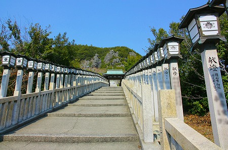

さて、小豆島の洞窟寺院もいよいよ終盤戦。

島四国四十二番札所、
西の滝と呼ばれるお寺に向かう。
正式には大麻山龍水寺といい、
小豆島で最も古い歴史を誇るお寺だという。
勿論、
弘法大師由来の寺なのだが、その辺は追々。
長い石段を登っていくと
不思議なお堂が見えてくる。

基壇部が朱で塗られたRC造。その上に普通の木造の仏堂が乗っている。
これは護摩堂なのだとか。
お堂の前面がぐいっとせり出しているのがスリリング。
これまで
この島で幾度か見てきたタイプの仏堂だ。
私にとってはハートを鷲掴みにされるほど素敵な建築だと思うのだが、小豆島の人々にとっては普通なのだろうか。
も、もしかしたらこのサイトをご覧の方も「全然普通でしょ」とか思ってるのか…？
脇にある岩が凄い。今にも石が落ちてきそうな。
しかも天辺に避雷針のような鉄棒が刺さってるじゃないの。
つまり
あの天辺に行ける、ということなのか？
どうする、俺？行くのか？あそこまで？
まずはともあれ護摩堂の隣にある本堂にご挨拶。
ここの本堂も崖にへばりつくように建っている。
つまり洞窟の覆屋なのだ。
堂内に入ると岩壁の中の洞窟が続いている。
薄暗い洞窟の奥に何やら明るい場所が見える。
入り口の外光が段々届かなくなってくる。
そこに現れるのは祭壇と供え物の数々。
その脇には「龍水」と題された湧き水が蓄えられている。
この洞窟は弘法大師伝承の地である。
この西の滝付近には古くから二匹の龍がいて、村人達を苦しめていたという。
ある日弘法大師がこの地を訪れ、真言密教の秘法で龍をこの洞窟に閉じ込めたのだとか。
その龍の涙が今でもこの洞窟から湧き出している、という言い伝えがあるのだ（諸説あり）。
というわけで
大師由来の霊水だけに万病に効くとか。
龍水を掬って一口頂戴してみる。うむ、水の味がするぞ。
祭壇の手前には巡礼の人が奉納した納め札がたくさん刺さっていた。
一般的には白は初心者、緑は中級者、赤は上級者。というカテゴリーになろう。
今回、小豆島では見なかったが四国霊場や他の霊場などでは
銀色や金色という名人クラス、さらには
レジェンド級の錦の札まであるというのだから奥が深い。
洞窟の奥から流れる水がチロチロと光の筋を作っていた。
で、次は先ほどの真っ赤なお堂である。
ここは護摩堂で、下から見ると奇天烈な建物だが、本堂の方から見ると朱色の基壇部が見えないので、ごくごく普通の木造のお堂に見える。
中はこんな。
で、さっきからずーっと気になっている護摩堂の脇にそびえる岩へと向かう。
この岩は
金剛界行場、あるいは
東の行場というらしい。
ということは西の行場、あるいは胎蔵界行場と呼ばれる行場もあるのだろうが何処だか判りませんでした。
ゴロゴロとした岩が積み重なったような巨石には
ハシゴが一本だけ架かっている。
特に制限をされているようでもないので登ってみる。
登った風景はこんな感じ。
絶景！である。
小豆島ではあちこちで
洞窟潜る〜カッコイイ建物を愛でる〜岩に登る、という3つの行程を黙々とこなしてきたが、ここの眺めが一番印象的だった。
遠くに見えるのは干潮のときにだけ4つの島が繋がるという通称エンジェルロード。
この道を
二人で手をつないで渡ると結ばれるんだとか…。
そもそもこんな辺鄙なところで手をつないで歩いてたらそれは
すでに結ばれているか心中かどっちかでしょ、と思わなくもないが…
夢もロマンの欠片も持ち合わせない中年にはよく判りませぬ。
どうせ結ばれるんなら
城南電気の社長とでも手をつないで渡りたいもんです。
いや、社長じゃなくて（亡くなっちゃったし）社長のアタッシェケースと手をつないで渡りたいです。
いや、アタッシェケースもいいや。めんどくさいから
中身だけ下さい。
…って何の話をしてるんだ…
つかそもそも何時の話をしてるんだ！
などと言ってる間に鎖を伝って
岩の天辺に来てしまった。
うぉー。護摩堂の屋根があんなに下に！
ぬぉー！

チョット足元がガクブル状態。
一歩間違えたらあの世行き。そのまま
伊豆極楽苑の2階に行ってしまうんじゃないか、というレベル。
しかも石の寄せ集めのような岩だけに、踏み抜いて石が下に落下しそうで恐い。いや、実際にはしっかりしてましたけどね。
ちなみに天辺はこんな感じ。
こんなハードな行場にフランクに行けるとは小豆島恐るべし。
行場から降りると年配のお遍路さんがヨチヨチと歩いていた。
この人もあの岩に登るんだろうか？いや、無理無理！
上るときには気付かなかったけど、石段の先には海が広がっていたんだね。
これもまた絶景ナリ。
次ラストです！